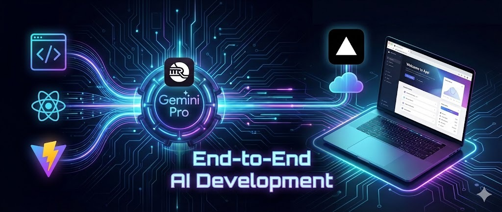
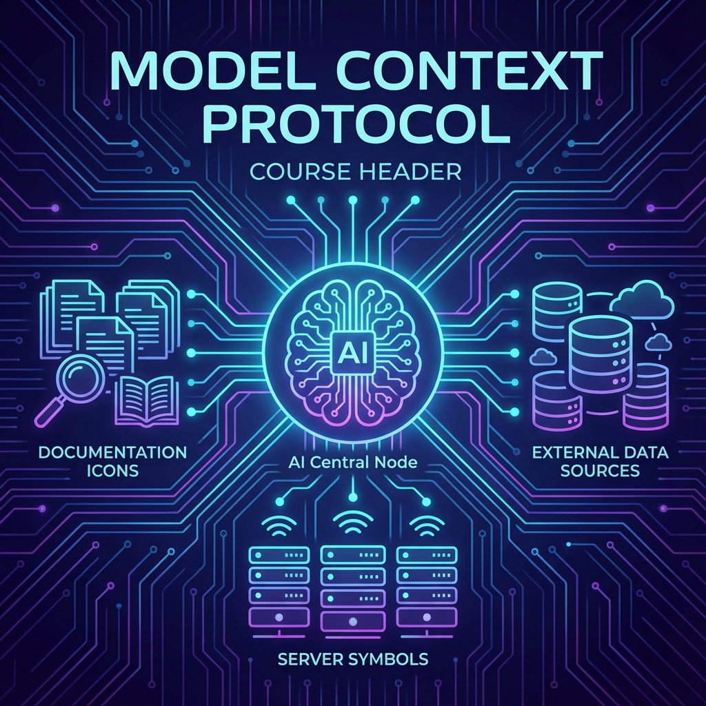

AI Dev Tools by Zoomcamp
Course Overview
This page documents my progress in the AI Dev Tools by Zoomcamp course.
Week 1: Introduction, Setup & AI Tools Overview

Goals
- Set up the environment
- Introduction to AI development tools
- AI-assisted development with Snake game example (React + JS)
- Chat applications: ChatGPT, Claude, DeepSeek, Microsoft Copilot
- Coding assistants / IDEs: Claude Code, GitHub Copilot, Cursor, Pear
- Project bootstrappers: Bolt, Lovable
- Agents: Anthropic Computer Use, PR Agent, others
- Homework : build a Todo app in Django using AI tools
Recap - Week 1
This first week of the AI Dev Tools Zoomcamp helped me lay the foundations of AI-assisted coding — i.e. adopting tools and workflows that make code writing faster, cleaner, and more efficient. Here are the main takeaways:
The course introduced me to the concept of “Vibe Coding” — leveraging AI assistants, coding-assist tools, project bootstrappers, and even automated agents to accelerate development rather than reinvent the wheel.
I discovered a concrete landscape of current tools: AI-powered code assistants / IDEs (like GitHub Copilot, Cursor, Claude Code, etc.), as well as project generators (“bootstrappers”) such as Bolt or Lovable, which let you rapidly scaffold a new app.
The methodology is hands-on: right away we work on a small project (a Snake game in React + JS), using these AI tools to see their real benefit in a development context.
A key message from the course: you don’t need prior AI knowledge to begin. If you already know a programming language (Python, JavaScript…), that’s enough to start benefiting from AI assistants.
What struck me: the potential of a modern, AI-integrated dev workflow — combining assistants, agents, automation — to reduce friction, speed up prototyping or production phases, and free mental bandwidth for architecture, business logic, and code quality.
In short — Week 1 helped me shift away from the “hand-code everything” paradigm toward a more fluid, developer-AI collaborative approach that feels well-suited for modern software projects.
Homework: Todo app in Django using AI tools
Week 2: End-to-End Project

Goals
- Use a coding assistant for an end-to-end project
- Build Snake in React/TS
- Define API with OpenAPI
- Generate FastAPI server from OpenAPI specs
- Add CI/CD
- Deploy the application
- Homework : End-To-End Project - Online Coding Interview Platform
Recap - Week 2
This week took my understanding of AI-assisted development to the next level by building a complete end-to-end application — from frontend to backend, database, containerization, and cloud deployment. Here’s what I learned:
Frontend-First Approach with AI
We started by using Lovable (or similar AI tools like Bolt, Cursor, or Claude Code) to rapidly scaffold a multiplayer Snake game in React with TypeScript. The key insight: rather than starting with backend logic, we built an interactive frontend first, complete with mockups for authentication, leaderboards, and live gameplay. This frontend-first strategy shifts how you think about API contracts — you build the UI you want, then design the backend to serve it.
The prompt engineering for frontend was crucial: describing the app’s features (game modes, multiplayer mechanics, testing coverage) helped the AI generate a cohesive, testable codebase. The lesson: clear requirements lead to better code generation.
API-First Backend Design with OpenAPI
Once the frontend was done, we didn’t write the backend arbitrarily. Instead, we:
- Extracted OpenAPI specifications from the frontend code — documenting what API endpoints and data structures the frontend actually needs
- Generated a FastAPI backend directly from those specs
This “API contract first” approach ensures frontend and backend stay synchronized and prevents wasted effort on unused endpoints. I learned that OpenAPI is a powerful bridge between AI-generated frontend and backend — it forces both to speak the same language.
Database Integration & Real-World Concerns
Initially we mocked the database, then we integrated SQLAlchemy with PostgreSQL and SQLite. This introduced important real-world considerations:
- Integration testing: We wrote separate integration tests (not just unit tests) that spin up a SQLite database and verify the full data flow works
- Schema management & migrations: Real databases require careful handling of data persistence and schema changes
- Testing strategy: Mock databases for unit tests, real databases for integration tests
I realized that many junior developers skip this, but it’s critical for production apps.
Containerization & Local Development
We containerized everything using Docker Compose, bundling:
- Frontend (served via Nginx)
- Backend (FastAPI)
- Database (PostgreSQL)
This forced me to think about: - Environment configuration - Service networking and communication - Build processes and dependencies - Running everything locally in a reproducible way
Running docker-compose up --build felt like magic — suddenly an entire application stack worked locally, exactly as it would in production.
Deployment to the Cloud
We deployed to Render, combining frontend and backend into a single container. The workflow:
- Build a single Docker image with both services
- Push to a cloud platform (we chose Render for simplicity)
- Let the platform handle scaling, SSL, and management
This demystified “DevOps” — it’s really just containerizing intelligently and picking a platform that abstracts infrastructure away.
CI/CD Pipeline with GitHub Actions
The final piece was automating everything:
- Run tests (frontend + backend) on every push
- Run integration tests separately
- Deploy automatically to Render if tests pass
This creates a safety net — bad code can’t accidentally get deployed. We learned that CI/CD pipelines, while seeming complex at first, are just a series of automated checks and deployments.
Key Lessons
Leverage AI for speed, but maintain structure: AI can scaffold code fast, but without proper API contracts (OpenAPI), testing (unit + integration), and containerization, it falls apart at scale
APIs are the contract: OpenAPI specs bridge frontend and backend teams/tools — treat them seriously
Testing isn’t optional: Unit tests catch bugs, integration tests catch integration bugs. Both matter
Containerization enables reproducibility: Docker/Compose makes “it works on my machine” a non-issue
Automation frees mental energy: CI/CD means you can focus on features, not manual testing and deployment
End-to-end thinking: You can’t just build a feature in isolation anymore. You need to think: frontend → API → backend → database → tests → deployment
Mindset Shift
Week 1 taught me AI tools exist.
Week 2 taught me how to think like a real engineer using those tools: designing APIs, writing tests, containerizing, and automating. It’s the difference between “I can generate code” and “I can ship production applications.”
Homework: End-to-End Project - Online Coding Interview Platform
The app can be able to do the following:
- Create a link and share it with candidates
- Allow everyone who connects to edit code in the code panel
- Show real-time updates to all connected users
- Support syntax highlighting for multiple languages
- Execute code safely in the browser
Week 3: Model Context Protocol (MCP) & Agents

Goals
- Understand the Model Context Protocol (MCP) and its primitives
- Explore the MCP ecosystem (clients, servers, and tools)
- Compare communication modes: stdio vs HTTP/SSE
- Use
mcp-inspectorandfastmcpfor development - Build and integrate custom MCP tools (Scraper, Search)
- Leverage MCP servers for live documentation and workflow automation
Recap - Week 3
This week was a deep dive into the Model Context Protocol (MCP), an open standard that enables AI models to interact with external data sources and tools in a standardized way. Here’s what I learned:
Standardizing AI Interactions
MCP solves the problem of “bespoke” integrations for every AI tool. Instead of writing custom code for each AI assistant to access a database or API, we can now build MCP Servers that any MCP Client (like Cursor, Claude Desktop, or VSCode) can understand. This decoupling of the “brain” (AI model) from the “hands” (tools/data) is a game-changer for developer productivity.
MCP Primitives: Tools, Resources, and Prompts
I learned the three core building blocks of MCP:
- Tools: Executable functions the AI can call (e.g., get_weather, scrape_website).
- Resources: Read-only data sources the AI can inspect (e.g., local files, API docs).
- Prompts: Pre-defined templates that guide how the AI should interact with the user or the tools.
Developer Experience with FastMCP
Using FastMCP (by Jon Lowin) made building servers incredibly easy. With just a few lines of Python and a decorator (@mcp.tool), I could transform a standard function into an MCP tool. The library handles the complex JSON-RPC communication under the hood, allowing developers to focus on the logic.
Protocol Transports: Stdio vs. SSE
We explored two main ways MCP clients and servers communicate:
- Stdio: The standard way for local integrations (e.g., a CLI tool or a plugin within an IDE).
- SSE (Server-Sent Events): Enables remote communication over HTTP, which is essential for web-based agents and distributed systems.
Supercharging Workflows with Live Docs
One of the most powerful use cases we saw was using Context 7. By connecting an AI assistant to live documentation (like Airflow or Astro) via MCP, the model can “see” the latest updates and fix code based on real-time info, rather than relying on stale training data.
Key Lessons
- MCP is the “USB port” for AI: It provides a universal interface for AI power.
- Fast prototyping is key: Tools like
mcp-inspectorallow you to test your server logic instantly without needing a full AI client. - Connect to the real world: Whether it’s scraping a website or indexing a GitHub repo, MCP allows AI to act on real, current data.
Homework
I implemented an MCP server that included:
1. Web Scraper Tool: Uses the Jina Reader API to convert any URL into clean markdown for the AI to process.
2. Documentation Search Tool: Downloads a repository, indexes markdown files using Minsearch, and provides a search function to retrieve relevant context.
This turned my AI assistant into a specialized documentation expert for any library I point it at.
Homework: MCP Scraper and Search Tool